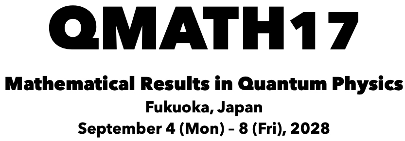

The QMATH conference series brings together researchers working on the mathematical theory of quantum physics. For its 17th edition, QMATH will be held in Japan for the first time.
We are delighted to announce that QMATH17 will take place at the Kyushu University School of Medicine Centennial Hall, in a central part of Fukuoka. This is an exceptionally attractive and convenient venue for an international meeting: it is easily accessible from Fukuoka Airport, with a wide range of hotels and restaurants nearby. We could hardly have hoped for a better setting for QMATH17, and we very much hope to see many of you in Fukuoka!
QMATH17 is organized in cooperation with the International Association of Mathematical Physics (IAMP). The conference is made possible by the generous support of ZEN University, funding from a Grant-in-Aid for Scientific Research (KAKENHI), and a generous donation from an anonymous benefactor.
International Advisory Board:
Simone Warzel (TU Munich, chair)
Anurag Anshu (Harvard)
Gregory Berkolaiko (Texas A&M)
Serena Cenatiempo (GSSI)
Laszlo Erdoes (ISTA)
Pavel Exner (Doppler Institute, CTU Prague)
Hal Tasaki (Gakushuin)
Provisional Organizing Committee:
Fumio Hiroshima (Kyushu, chair)
Fumihiko Nakano (Tohoku)
Hal Tasaki (Gakushuin)
Past QMATH conferences
QMATH Conference Series Steering Committee